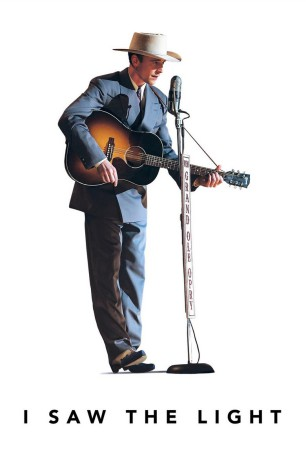

#4167 I Saw the Light
 
 IMDB-Wertung: 5.7 / 10
IMDB-Wertung: 5.7 / 10  Metascore: 0
Metascore: 0 
The story of the country-western singer Hank Williams, who in his brief life created one of the greatest bodies of work in American music. The film chronicles his rise to fame and its tragic effect on his health and personal life.
Jahr: 2015
Dauer: 123 Minuten
FSK: 6
Land: USA Studio: Sony Pictures ClassicsTonspuren: DTS - ,
Untertitel: Deutsch,
Auflösung: 1080p (1920x800) Größe: 5406 MB
Genre: Biographie, Drama, Musik, Liebe
Regisseur: Marc Abraham
Drehbuch: Fathi Beddiar
Soundtrack:
Darsteller:
Datei: X:\2015(G-M)\I Saw the Light (2015, FSK6, 1920x800).mkv seit 27.07.2016
Festplatte: HD 2015(A-Z)
 Es gibt insgesamt 129 Filme in der Gruppe '2015(G-M)'
Es gibt insgesamt 129 Filme in der Gruppe '2015(G-M)'